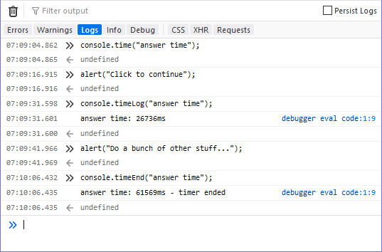

Logs the current value of a timer that was previously started by calling {{domxref("console.time()")}} to the console.
See Timers in the documentation for details and examples.
{{AvailableInWorkers}}
console.timeLog(label);
labelIf no label parameter included:
default: 1042ms
If an existing label is included:
timer name: 1242ms
If there is no running timer, timeLog() returns the warning:
Timer “default” doesn’t exist.
If a label parameter is included, but there is no corresponding timer:
Timer “timer name” doesn’t exist.
console.time("answer time");
alert("Click to continue");
console.timeLog("answer time");
alert("Do a bunch of other stuff...");
console.timeEnd("answer time");
The output from the example above shows the time taken by the user to dismiss the first alert box, followed by the time it took for the user to dismiss the second alert:

Notice that the timer's name is displayed when the timer value is logged using
timeLog() and again when it's stopped. In addition, the call to timeEnd()
has the additional information, "timer ended" to make it obvious that the timer is no
longer tracking time.
| Specification | Status | Comment |
|---|---|---|
| {{SpecName("Console API", "#timelog", "console.timeLog()")}} | {{Spec2("Console API")}} | Initial definition |
{{Compat("api.Console.timeLog")}}